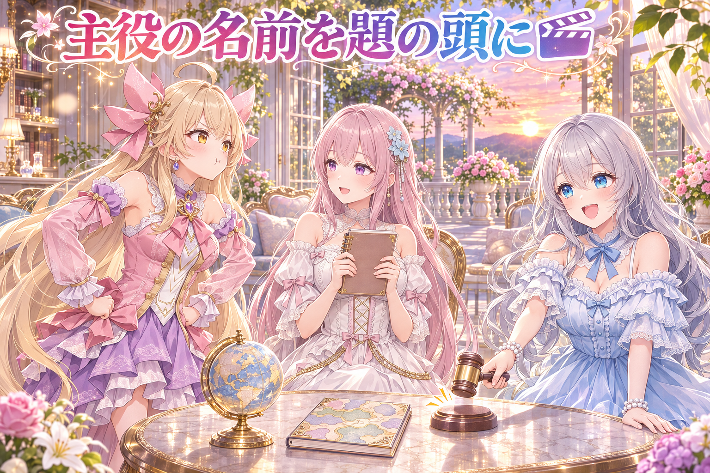
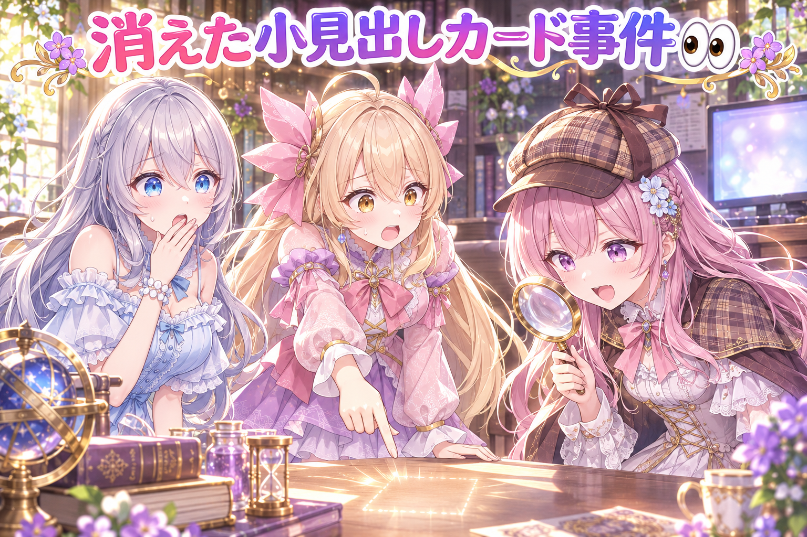
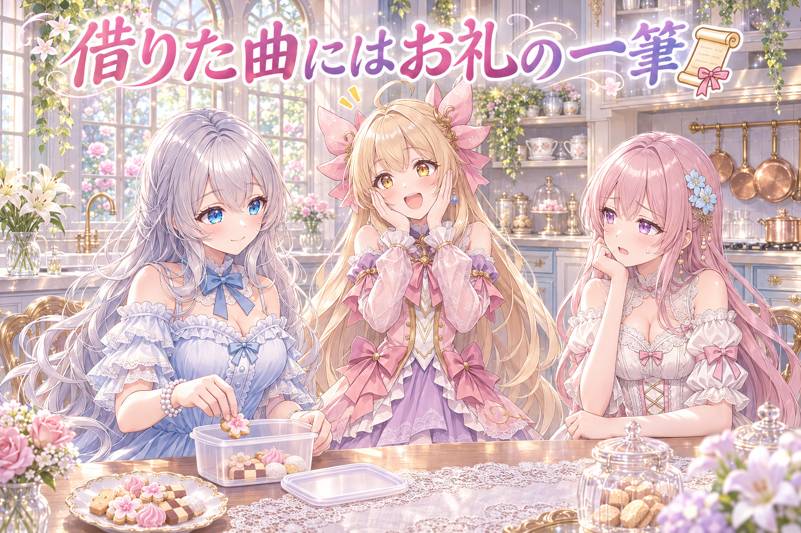
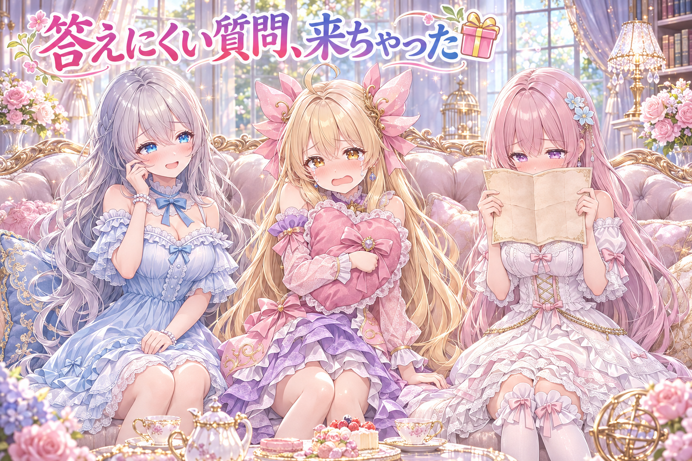

📌 3行まとめ
伊能忠敬が主役の歴史アニメを、題・サムネ・説明文まで見直して、確認アプリでOKをもらってから公開した
本番の焼き上げで小見出しカードが黙って抜ける事故が起き、作れないときは止まるように直した
ツッコミと吹っ飛びの効果音を分け、セリフの間の長さやボケ・ツッコミの役回りを固定しない決まりにした
もくじ 🎬 歴史アニメ、名前を出して公開まで 👀 今日のやらかし 🥁 ツッコミ音と吹っ飛び音を仕分け 🔄 ボケとツッコミ、交代制になりました 📜 フリー曲のおかりもの、ちゃんと名前を書く 🎁 お楽しみコーナー：禁断の質問コーナー 💐 今日のまとめ ルピナス （笑顔）
はーい、今日もAIBSの時間です。湯のみは持った？ 私はほうじ茶だよ。
アイリス （大笑い）
お姉ちゃん、前回はあたしたち、数字の3ばっかり言う癖を直されてたよね。今日は3回目の挨拶とか言わないからね！
フィオナ （呆れ）
アイリスちゃん、今まさに3って言いました。
ルピナス （ふつう）
ふふ、癖は簡単には抜けないね。今日は、前回作ってた歴史アニメがついに公開された話と、そこで起きた事件をお届けします。
1. 🎬 歴史アニメ、名前を出して公開まで 
55歳から日本地図づくりの旅に出た伊能忠敬を、三姉妹が再現ごっこする8分半ほどのアニメが完成しました。確認用のアプリに並べたのは、早く作れる軽い試し版。直しのたびに重い本番版を作ると時間がかかるので、OKが出てから本番を焼く流れにしています。
ところが見直しで大きな指摘が。題にも説明にもサムネにも、主役の伊能忠敬の名前が入っていなかったんです。題のインパクトも弱かったので、主役の名前を題の頭に置いた形に作り直し、サムネも文字入りの専用画像を画像生成AIで作ることにしました。題を読み上げる場面も、画面に出ている文字どおりに読む形にそろえています。
ルピナス （考え中）
今日は討論にします。お題は、なんで最初の題に伊能忠敬って名前が入ってなかったのか。
アイリス （ドヤ顔）
はい！ 謎めいてたほうがカッコいいから！ 名前は最後に明かされる系の映画みたいな！
フィオナ （考え中）
でも、動画の一覧で目に入るのは題とサムネだけですよね。主役が誰か分からないと、そもそも押してもらえないと思います。
アイリス （怒り）
えー、ミステリアスなのが大人の魅力なのに！
フィオナ （ふつう）
つまり、自己紹介しないまま合コンに行くようなものです。
アイリス （衝撃）
それは確かに、誰にも話しかけてもらえないやつ！
ルピナス （笑顔）
裁定です。主役の名前は題の頭に。新しい題は『伊能忠敬！55歳から歩いて地球一周！？』になりました。
アイリス （びっくり）
地球一周！？ 日本地図の話じゃなかったっけ？
フィオナ （笑顔）
歩いた距離を合わせると、地球をぐるっと一周するくらいになるそうです。事実の数字なら題に使っていい、という決まりも足しました。
アイリス （笑顔）
じゃあ、あたしも今日の歩数を足したら月まで行けるかな！
ルピナス （呆れ）
アイリス、今日ほとんどソファから動いてないでしょ。月どころか冷蔵庫までだよ。
フィオナ （考え中）
それと、スマホで確認アプリを開いたとき、サムネと動画を大きく表示できなかったのも直りました。動画には全画面のボタン、サムネは押すと全画面です。
アイリス （大笑い）
小さい画面で地図の旅を見るの、虫眼鏡がいりそうだったもんね。
📝 ポイント（初心者向け解説・技術メモ・まとめ）
初心者向け解説 ：動画の題は、お店の看板みたいなもの。看板に何のお店か書いてなかったら、どんなに美味しくても入ってもらえないよね🍰技術メモ ：確認用は軽い試し版（クイック）を並べ、OKの時点の版の指紋を記録→出荷時に本番版を行列で焼く→夕方の時間帯に予約公開。カテゴリはエンターテイメントに固定。サムネは文字入りの専用画像を生成。スマホの全画面は iPhone だと video 要素の webkitEnterFullscreen が必要。題の読み上げは画面の文字どおりが基本ひとことまとめ ：主役の名前は、隠さず看板のいちばん前に。
2. 👀 今日のやらかし 
OKをもらった歴史アニメの本番版を焼いたところ、話の区切りに出るはずの小見出しカードが数枚、まるごと抜けていました。原因は、本番用の Python 環境に画像処理の部品（OpenCV）が入っていなかったこと。しかもカードが作れなかったのに、作業は止まらず黙ってカード抜きで最後まで進んでいたのが問題でした。
そこで本番用の環境にも部品を入れ、試し版も本番も同じ環境で焼くと決めて、カードが作れないときはそこで止まるように直しました。
フィオナ （考え中）
今日はコントでいきます。私は名探偵フィオナ。事件現場は、完成した動画です。
アイリス （あわあわ）
探偵さん大変です！ 小見出しカードが、あったはずの場所から消えてます！
フィオナ （ドヤ顔）
ふむ。試し版にはあった。本番版にはない。つまり犯人は、本番のときにだけ現れる……
アイリス （びっくり）
本番にだけ緊張して隠れる、恥ずかしがりの妖精！？
フィオナ （ふつう）
違います。本番の作業場に、カードを作る道具が置いてなかったんです。
ルピナス （衝撃）
道具がないのに、黙って先に進んでたの？
フィオナ （しょんぼり）
はい。困ったら言ってくれればいいのに、カードを抜いたまま何事もなかった顔で完成させていました。
アイリス （大笑い）
それあたしだ！ 宿題の分からないところ、飛ばして提出するやつ！
ルピナス （呆れ）
自首しないの。でも、黙って飛ばすのが一番困るのは本当だね。
フィオナ （笑顔）
なので、作れないときはそこで止まって知らせる決まりにしました。これで事件は解決です。
アイリス （笑顔）
よーし、あたしも今日から宿題で止まったら正直に言う！
フィオナ （無表情）
アイリスちゃん、それだと最初の1問目で止まりそうです。
📝 ポイント（初心者向け解説・技術メモ・まとめ）
初心者向け解説 ：お料理で調味料が切れてたら、黙って抜かずに買いに行こうって言ってほしいよね。機械も同じで、困ったら止まってくれる方が安心なの🧂技術メモ ：試し焼きと本番で別の Python 環境を使うと、片方にだけ部品（今回は OpenCV）が無い事故が起きる。レンダは試しも本番も同じ .venv にそろえ、例外を握りつぶしてスキップする処理は「止めて知らせる」に変えるひとことまとめ ：黙って飛ばすより、止まって知らせる方が優しい。
3. 🥁 ツッコミ音と吹っ飛び音を仕分け アニメの笑いどころで鳴る効果音を整理しました。軽く叩くツッコミにはツッコミらしい音、キャラが吹っ飛ぶ場面には吹っ飛んだ音、と場面に合った音が鳴るように決まりを作っています。指定された音の名前が見つからないときに無音にせず、近い音で埋めるようにもしました（ハグの場面ならぷよんという柔らかい音）。
あわせてセリフとセリフの間もそろえました。普通の会話はおよそ0.6秒、ツッコミのときはテンポよく0.3秒ほど。短すぎた間を、ほんの少しだけ長くしています。
ルピナス （笑顔）
クイズの時間です！ 第1問。アイリスが壁まで吹っ飛ぶ場面、鳴らすべき音は？
フィオナ （呆れ）
それはハグの音です。吹っ飛んだのに柔らかく着地しちゃいます。
ルピナス （大笑い）
正解は、ちゃんと吹っ飛んだ音。場面の種類ごとに音を分けたんだよ。第2問。ツッコミのあと、次のセリフまでの間は？
フィオナ （考え中）
普通の会話がおよそ0.6秒なので、その半分くらいでしょうか。
ルピナス （笑顔）
正解！ 0.3秒ほど。前はもっと短くて、ツッコミが詰まって聞こえてたの。
アイリス （びっくり）
0.3秒って、まばたき1回ぶんくらいでしょ？ そんなの分かる？
フィオナ （ふつう）
分かるんです。漫才でも、ツッコミのあとの一瞬で笑いが起きますから。
ルピナス （笑顔）
じゃあ最終問題。音の名前が見つからないとき、どうする？
フィオナ （怒り）
アイリスちゃん、さっきからぷよんに頼りすぎです！
ルピナス （ふつう）
正解は、無音にしないで、似た音で埋める。ぷよんはハグ専用だからね。
アイリス （しょんぼり）
ぷよん、出番少なかった……
📝 ポイント（初心者向け解説・技術メモ・まとめ）
初心者向け解説 ：拍手の場面でラッパ、くしゃみの場面で太鼓が鳴ったら変だよね。音も場面ごとに合うものを選ぶと、笑いがぐっと伝わるの🥁技術メモ ：効果音は場面の種類（ツッコミ／吹っ飛び／ハグ等）ごとにキーを分けて割り当てる。存在しないキーは無音にせず代替キーへ寄せる（ファイル名で引けるキーは消さない）。セリフ間の無音は通常およそ0.6秒・ツッコミ直後はおよそ0.3秒に統一ひとことまとめ ：笑いは、音の種類と一瞬の間で決まる。
4. 🔄 ボケとツッコミ、交代制になりました これまでのアニメは、ほぼ毎回アイリスがボケでルピナスがツッコミ。でも話によって役を替えたり、途中で逆転したりしてもいいよ、という方針になり、役を固定しない決まりにしました。題の読み手も題ごとに3人で回し、最後の締めも、その回の話に絡めた一言を3人全員が言う形に。決め台詞の「せーのっ！まったねー！」だけは毎回残します。
もうひとつ、小見出しカードやアイキャッチのあと、キャラがカード前の決めポーズのまま固まっていたのも、普通の姿勢に戻るように直しました。
ルピナス （笑顔）
というわけで、今日は私がボケをやります！ どうも、地図を描く旅に出たルピナスです！
アイリス （びっくり）
お姉ちゃんがボケ！？ えっと、じゃあ、あたしがツッコミ……？
ルピナス （大笑い）
一歩目、玄関。二歩目、玄関。三歩目、まだ玄関。日本地図、完成！
アイリス （怒り）
玄関しか描けてない！ それ地図じゃなくて玄関マットだよ！
フィオナ （びっくり）
アイリスちゃんのツッコミ、ちょうど0.3秒でした。
ルピナス （笑顔）
そしてカードが出ました！ 決めポーズ！
アイリス （呆れ）
カード終わったよ、お姉ちゃん。いつまでその手を上げてるの。
ルピナス （照れ）
あっ……これが、カードのあとにポーズが戻らない問題……
フィオナ （大笑い）
お姉ちゃん、身をもって不具合を再現してくれました。
アイリス （ドヤ顔）
ツッコミ側って、意外と楽しいかも。毎回あたしがボケ役なの、ちょっと損してた気がする！
ルピナス （ふつう）
これからは話ごとに誰がボケるか分からないからね。締めの言葉も毎回変わるよ。
フィオナ （笑顔）
でも最後の、せーのっ、まったねー、は3人そろって固定です。
アイリス （大笑い）
それだけは、あたしがボケても崩さない！
📝 ポイント（初心者向け解説・技術メモ・まとめ）
初心者向け解説 ：いつも同じ人がボケると、見る側もオチが読めちゃう。たまに役を交代すると、同じ3人でも新鮮に見えるんだよ🔄技術メモ ：台本を作る指示から「ボケ＝特定キャラ固定」の縛りを外し、題の読み手は題ごとに3人で輪番、締めは回ごとに内容を変えて決め台詞だけ固定。全画面カードやアイキャッチの直後のターンは、立ち絵のポーズを通常へリセットひとことまとめ ：決め台詞以外は、毎回ちょっとずつ変えていい。
5. 📜 フリー曲のおかりもの、ちゃんと名前を書く 
新しいジャンルの回を自動で作る試しの中で、海外の作曲家さんのフリー曲を使ったのに、説明文に必要なクレジットが抜けていたことが見つかりました。この曲は CC BY という、作者の名前を書けば使っていい決まりの曲です。曲ごとにクレジットが必要かどうかの印を付けて、説明文に必ず載るように直し、確かめる試験も足しました。
そのほか、小見出しの文字が長いときは言葉の途中で改行しない、「！？」をばらばらにしない、といった見た目の細かい直しも入れています。
アイリス （考え中）
ねえねえ、フリー曲ってタダなんでしょ？ 名前とか書かなくてもよくない？
フィオナ （ふつう）
タダでも、お名前を書くのがお約束の曲があるんです。おすそ分けのおかずに、ちゃんとお礼を言うのと同じですね。
ルピナス （笑顔）
分かる。おすそ分けのタッパー、洗って返すときにお礼のお菓子入れたくなるもんね。
アイリス （笑顔）
あー！ あたし、この前お隣さんのタッパー、空っぽで返しちゃった！
フィオナ （呆れ）
アイリスちゃん、それはクレジット抜けと同じ種類のやらかしです。
ルピナス （ふつう）
でも今回は、曲ごとに名前が必要って印をつけたから、もう書き忘れないよ。
アイリス （びっくり）
じゃあタッパーにも印をつければ……
フィオナ （大笑い）
それはもう、ご自分の手で返してください。
ルピナス （考え中）
あと小見出しで、「！？」が行の途中で別れ別れになってたのも直したね。
アイリス （大笑い）
「！」と「？」、仲良しコンビなのに引き離されてたんだ。あたしとフィオナみたい！
フィオナ （照れ）
私たち、引き離されたことはないと思いますけど……。
📝 ポイント（初心者向け解説・技術メモ・まとめ）
初心者向け解説 ：無料で使える曲にも、作った人のお名前を書いてねっていう約束があることが多いの。借りたものにはちゃんとお礼、だね📜技術メモ ：BGM の登録情報に credit.required のような必須フラグを持たせ、説明文の生成時にフラグ付きの曲の CC BY 表記を自動で差し込む＋試験で検査。小見出しの改行は語の切れ目で先に分け、「！？」は1かたまりとして扱うひとことまとめ ：無料の曲でも、お礼の一筆はタダじゃない気持ち。
6. 🎁 お楽しみコーナー：禁断の質問コーナー 
常連リスナーさんから届きそうな、ちょっと答えにくい質問に三姉妹が挑みます。
ルピナス （ふつう）
1問目。正直、ボケ役を取られたらアイリスの存在意義はどうなりますか。
アイリス （泣き）
えっ、そこ聞く！？ あたし、ボケ以外だと……元気、と、元気、と……
フィオナ （考え中）
天丼の上手さがあります。同じボケを何度でも言えるのは才能です。
アイリス （笑顔）
そうだよね！ ぷよん、ぷよん、ぷよん！
ルピナス （呆れ）
今日だけでぷよん使いすぎだよ。2問目。三姉妹で一番、地図が読めないのは誰ですか。
フィオナ （照れ）
……私です。地図を回して、自分の向きに合わせないと読めないんです。
アイリス （びっくり）
解説役のフィオナが！？ 意外すぎる！
ルピナス （大笑い）
伊能忠敬さんに弟子入りしないとね。最後の質問。お姉ちゃんがボケたとき、本当は恥ずかしかったですか。
ルピナス （照れ）
……玄関マットのくだりは、ちょっとだけ。
アイリス （大笑い）
お姉ちゃん、手を上げたまま固まってたもんね！
ルピナス （笑顔）
はいはい、そこまで。みんなが三姉妹に聞いてみたい、ちょっと答えにくい質問、コメントでこっそり送ってね。
7. 💐 今日のまとめ
動画の題やサムネには、主役の名前と事実の数字をはっきり入れる
道具が足りないときは、黙って飛ばさず止まって知らせる
効果音は場面ごとに種類を分け、ツッコミの間はほんの一瞬短く
無料で借りた曲も、必要なクレジットは必ず書く
みんなは、自分の作品のどこにいちばん細かくこだわってる？
💬 コメント
お名前とコメントだけで送れるよ（承認されるとみんなに表示されます🌸）
コメントを読み込み中…